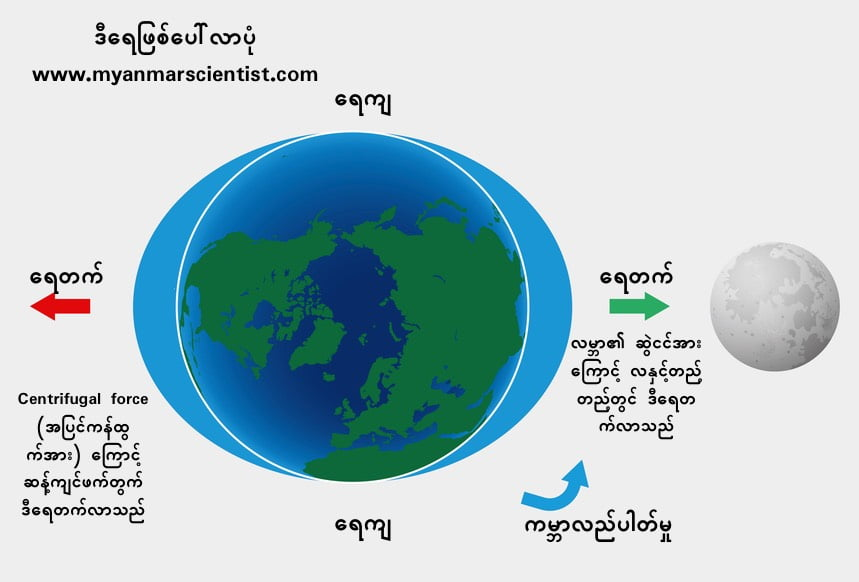

ဒီရေတက်ရတာကတော့ အဓိကက လကမ္ဘာရဲ့ ဆွဲငင်အားကြောင့်ပါ။ လဟာ ကမ္ဘာကနေ မိုင် ၂၄၀,၀၀၀ နီးပါး ကွာဝေးပါတယ်။ ဒီလောက်ကွာဝေးပေမယ့် လရဲ့ဆွဲငင်အားက ကမ္ဘာပေါ်ကို တက်ရောက်မှု ရှိဆဲပါ။ ဒါပေမယ့် ဝေးလွန်းတဲ့ အတွက် လူတွေကို အာကသထဲ ပျံထွက်သွားအောင်တော့ မဆွဲနိုင်ပါဘူး။ ဒါပေမယ့် ရေလို လှုပ်ရှားလွယ်တဲ့ အရာကိုကျတော့ လရှိရာဆီကို ဆွဲနိုင်ပါသေးတယ်။ ဒါ့ကြောင့် လအပေါ်တည့်တည့် (ခေါင်းပေါ်တည့်တည့်) ရောက်တဲ့ အချိန်မှာ လရဲ့ဆွဲငင်အားကြာင့် သမုဒ္ဒရာရဲ့ ရေမျက်နှာပြင်ဟာ ပေအနည်းငယ် မြင့်တက်လာပါတယ်။ ဒါကို ဒီရေတက်တယ်လို့ ခေါ်တာပါ။
ဒါဆိုမေးစရာ ရှိပါတယ်။ ဘာ့ကြောင့်လို့ မြစ်ထဲ၊ ကန်ထဲက ရေက လအပေါ်တည့်တည့်ရောက်တဲ့ အချိန်မှာ ဒီရေတက်သလို တက်မလာရတာလဲ ဆိုတာပါပဲ။ တကယ်တော့ မြစ်ရေ၊ ကန်ရေတွေလဲ ပင်လယ်ရေလိုပဲ ဒီရေအတက်အကျ ရှိပါတယ်။ ဒါပေမယ့် ရေတိမ်ပြီး ရေပမာဏကလဲ (သမုဒ္ဒရာနှင့် ယှဉ်ရင်) နဲတဲ့အတွက်ကြောင့် လက်မအနည်းငယ်လောက်ပဲ တက်တော့ သာမန်လူတွေအနေနဲ့ ဒီရေတက်တာကို မမြင်ရတာပါ။
နောက်မေးစရာ တစ်ခုကတော့ လက ကမ္ဘာကို တစ်နေ့မှာ တစ်ကြိမ်ပဲ ပတ်တာဆိုတော့ လခေါင်းပေါ် ရောက်တာကလဲ တစ်နေ့ကို တစ်ကြိမ်ပဲ ဖြစ်မှာပေါ့။ ဒါဆိုဘာ့ကြောင့် ဒီရေက တစ်နေ့ နှစ်ကြိမ် တက်ရတာလဲ ဆိုတာပါ။
ဂယ်လီလီယိုကို မှတ်မိကြတယ် မဟုတ်လား။ ကမ္ဘာက နေကိုပတ်နေတယ်လို့ ပြောခဲ့တဲ့သူလေ။ သူက ဒီရေတက်ရတာဟာ ကမ္ဘာလည်နေလို့လို့ ပြောခဲ့တယ်။ ဂယ်လီလီယိုဟာ အလွန်တော်တဲ့သူဖြစ်ပြီး သူပြောခဲ့တာတွေ တော်တော်များများကလဲ မှန်ပါတယ်။ ဒါပေမယ့် ပင်လယ်ဒီရေနဲ့ ပတ်သက်လို့ သူ့ရဲ့ ထင်မြင်ယူဆချက်ကတော့ မှားနေပါတယ်။ သူနဲ့ခေတ်ပြိုင် ပညာရှင်တစ်ဦးဖြစ်တဲ့ ကက်ပလာကတော့ ဒီရေတက်တာ လကြောင့်လို့ ကောင်ချက်ဆွဲပါတယ်။ သူပြောတာ မှန်ပါတယ်။ ဒါ့ပေမယ့် သူ့သီအိုရီကလဲ တစ်နေ့ကို ဒီရေတစ်ကြိမ် တက်တာကိုပဲ ရှင်းနိုင်ပြီး ဘာ့ကြောင့် တစ်နေ့နှစ်ကြိမ် ဒီရေတက်ရတာလဲဆိုတာကို မဖြေရှင်းနိုင်ပါဘူး။ ဒီအဖြေကို ပေးသူကတော့ နာမည်ကျော် သိပ္ပံပညာရှင် ဆာအိုင်းဆက်နယူတန်ပါပဲ။ မှန်မိတယ်မဟုတ်လား၊ ပန်းသီးကျွေတာကို ကြည့်ပြီး ကမ္ဘာ့မြေဆွဲအားကို ရှာဖွေတွေ့ရှိခဲ့သူလေ။ (သူ့အကြောင်း အသေးစိတ်ကို နောက်မှ ရေးဦးမယ်။) သူရေးသားတဲ့ Principia ဆိုတဲ့ စာအုပ်ဟာ မြေဆွဲအားအကြောင်းကို အသေးစိတ် ရှင်းလင်းပြထားတဲ့ စာအုပ်ပါ။ ဒီဆွဲငင်အား သီအိုရီနဲ့ နယူတန်ဟာ ဒီရေပြဿနာကို ဖြေရှင်းနိုင်ခဲ့ပါတယ်။

အကယ်၍ ကမ္ဘာက မလည်ပဲ ငြိမ်နေမယ်ဆိုရင်တော့ လနဲ့တည့်တည့်က ပင်လယ်ရေကပဲ ကြွတက်လာမှာ ဖြစ်ပါတယ်။ ဒါပေမယ့် ကမ္ဘာက အငြိမ်မနေပဲ လည်နေပါတယ်။ ဒီတော့ ဒီလည်ပတ်မှုကြောင့် centrifugal force ဆိုတဲ့ အပြင်ကို ကန်ထွက်တဲ့အား ဖြစ်ပေါ်လာပါတယ်။ ကျောက်ခဲတစ်လုံးကို ကြိုးနဲ့ချည်ပြီး လှည့်ရင်ကျောက်ခဲက အပြင်ဖက်ကို ကန်ထွက်နေတာ အဲ့ဒီ centrifugal force ဆိုတဲ့ အပြင်ကို ကန်ထွက်တဲ့ အားကြောင့်ပေါ့။ ဒီကန်အားကြောင့် လကဆွဲလို့ တက်လာတဲ့ ဒီရေရဲ့ ဆန့်ကျင်ဖက်မှာရှိတဲ့ ပင်လယ်ရေဟာလဲ ကြွတက်လာပြီး အဲ့ဒီဖက် ခြမ်းမှာလဲ ဒီရေတက်လာရတာပါ။ အောက်ကပုံမှာ မြင်နိုင်ပါတယ်။
Reference:
(1) Universe Today | What Causes Tide?
(2) Cosmos | Why are there two tides a day?